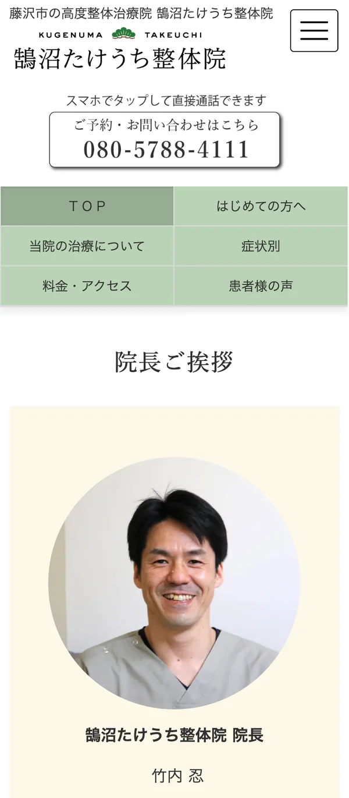

旧サイトのリニューアル案件です。店舗のリニューアルオープンに合わせて公開するため、デザイン・情報設計を全面的に刷新しました。
「手技治療」という一般的には馴染みの少ない治療内容に対して、ユーザーが抱える不安を軽減し、安心感や信頼感につながるサイト設計を目指しています。
また、「根本から改善する治療」であることや、「痛くない整体」であることを、図解や情報整理によって直感的に理解できるよう構成しました。
ターゲット
- 30〜60代の男女
- 身体の不調に悩み、根本改善を求めているユーザー
- 整体や治療院に対して不安を感じているユーザー
- 痛みの少ない施術を求めるユーザー
課題
- 旧サイトの情報が整理されておらず、内容が伝わりづらかった
- 「手技治療」という専門性の高いサービス内容を、初めてのユーザーにも分かりやすく伝える必要があった
- 「根本から改善する治療」であることを視覚的・直感的に理解できる構成が必要だった
- 「整体＝痛い」というイメージに対する不安を軽減したかった
- 信頼感・安心感を感じられるデザインへの刷新が必要だった
UI 設計
- 幅広い年代でも読みやすいよう、文字サイズや余白を意識した設計を実施
- 治療内容や改善イメージを理解しやすくするため、図解やビジュアルを活用
- 初めて来院するユーザーが迷わないよう、導線や情報の優先順位を整理
- 落ち着きと安心感を与える配色・トーンで統一
- スマートフォン閲覧時でも読みやすいレイアウトを意識し、情報量を整理

工夫したポイント
- 「専門性」と「わかりやすさ」のバランスを重視し、難しい内容を噛み砕いて整理
- 「どんな治療なのか」「痛くないのか」「本当に改善するのか」といったユーザー心理を想定し、段階的に不安を解消できる構成を設計
- 図解や視覚的な説明を用いることで、直感的に理解しやすいサイトに改善
- 信頼感を高めるため、治療院の想いや施術方針が伝わるコンテンツ構成を意識
- リニューアルオープンに合わせ、店舗イメージと統一感のあるデザインへ刷新